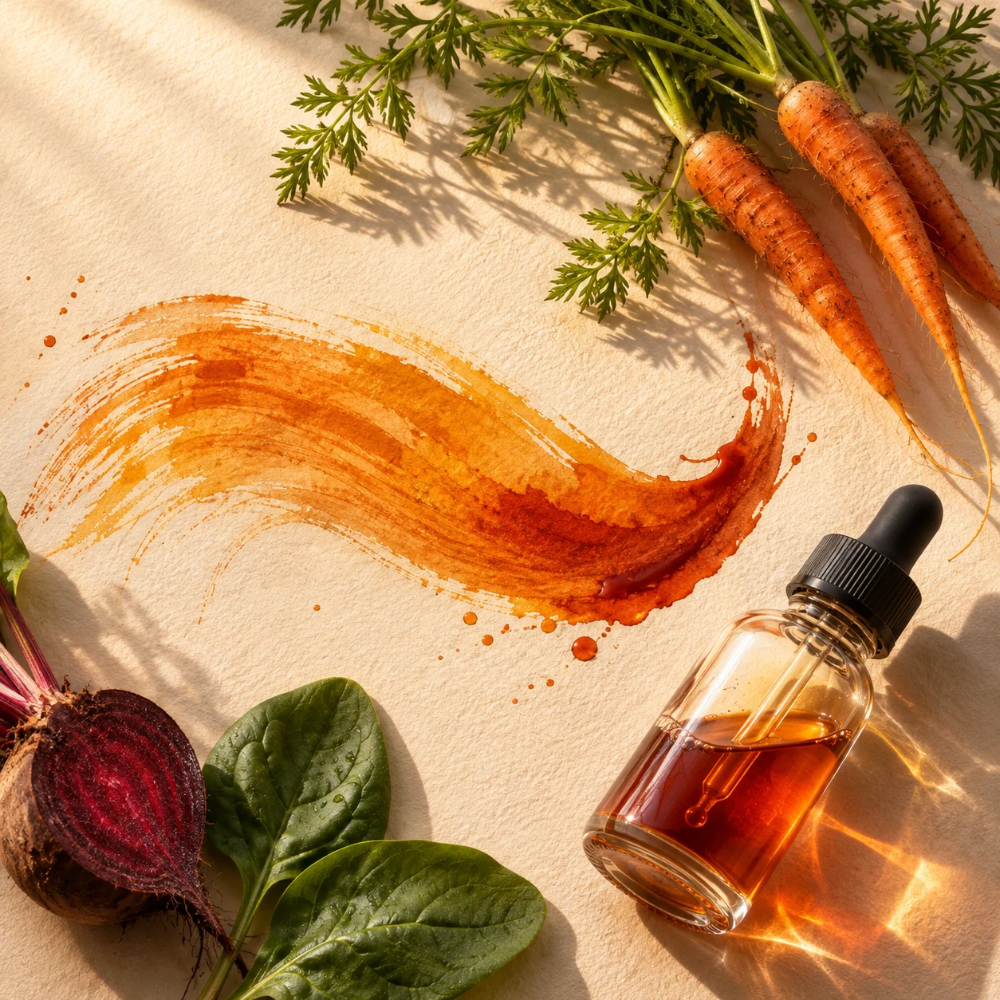

Zanahoria
Amarillo-anaranjado brillante, con fluidez media y secado en 3–4 min sobre papel bond.
Proyecto universitario · UNFLEP
Tres hortalizas, tres tintas. Extraemos color de la zanahoria, la remolacha y la espinaca para crear tintas con las que puedes dibujar y escribir sobre papel.

Laboratorio digital
Elige un pigmento y un papel, ajusta el pincel y dibuja. Puedes llevarte tu muestra como imagen.
Ámbar-naranja
Zanahoria · β-caroteno. En el ensayo preliminar secó en 3–4 min sobre papel bond.
Simulación visual de los tonos. Con teclado, usa las flechas para mover el pincel, Mayús + flechas para trazar y Espacio para marcar.
Ingeniería agroindustrial
El equipo diseñó un proceso de diez etapas a escala de laboratorio. Escoge una fase para seguir el recorrido de los pigmentos hasta el frasco.
Consultar metodologíaSeleccionar vegetales frescos, lavarlos, desinfectarlos y trocearlos para facilitar la extracción.
Extraer el pigmento en un medio líquido, separar las fibras y ajustar el extracto. La espinaca se trabajó en frío para preservar su tono.
Combinar el extracto con una base de agua y un espesante. Homogeneizar la mezcla para obtener un trazo continuo sobre el papel.
Envasar en goteros etiquetados y revisar el color, la consistencia, la continuidad del trazo y el secado.
Ensayos preliminares · 2026
El equipo observó diferencias en la fluidez, el acabado y el cuidado que requiere cada tinta.
Amarillo-anaranjado brillante, con fluidez media y secado en 3–4 min sobre papel bond.
Rojo intenso a magenta, con trazo continuo y homogéneo durante la prueba preliminar.
Verde oliva a vegetal. El extracto se obtuvo en frío y requiere protección frente a la luz.
Queda pendiente medir la vida útil, la viscosidad y el color con instrumentos, y realizar pruebas piloto en el aula.
Ficha para evaluación
La propuesta de gotero sirve para dosificar el pigmento en dibujos, caligrafía y manualidades. En la ficha puedes consultar el balance por lote, los costos directos estimados y las pruebas pendientes.
Leer ficha del proyecto